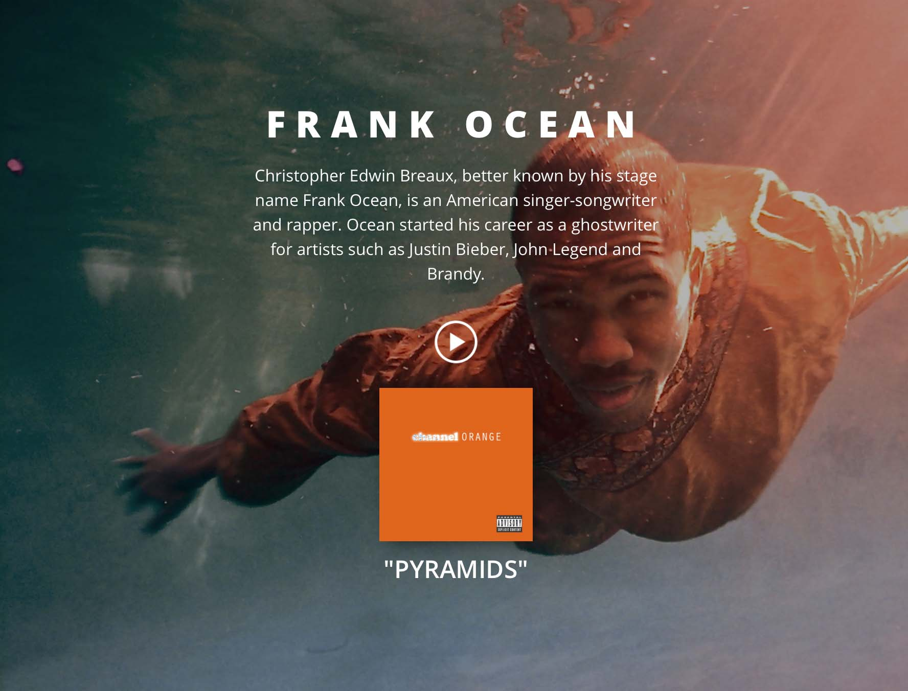

Through this handson, you will learn one method of putting a div directly in the middle of your page, both horizontally and vertically. You will also learn how to import fonts from Google.
At the end of this hands-on, you should have something like this:
This default font just isn't cutting it. Pick and import your own font from Google's expansive font library!
- Browse through the fonts or search for a font you like using the search bar. (We used Open Sans.)
- Click on the "Quick-use" button in the bottom right corner of the font.
- Select the weights you wish to use. The more you select, the more you have available but the longer your page takes to load. For the purpose of this handson, select font weights 300, 600, and 800.
- Copy and pase the provided coat into the head tag of your index.html
Now your font is properly linked to your HTML! However, we won't see any changes until we choose to use our new font on our CSS. Change the font-family property in the body tag and set it to your new font.
Maybe you don't like Frank Ocean as much as I do. Personalize your page by replacing the contents of the "title", "description", "song-link", "song-title", "background", and "album-art" ids with something you like!
Right now, everything is still on the left side of the page.
Fix that by centering your container and everything in it.
- Center text by adding text-align: 'center'
- Center images by adding margin: '0 auto'
Your page should now look similar to the image shown earlier!
A lot of code was written out for you in this handson. Things such as a full-screen background, a black background overlay, shadow effects, filters, and transitions are all present on your page. It would be a good idea to look at some of this code, play around with it, and try to understand how it works. Who knows, maybe you'll use some of these elements in your upcoming project!